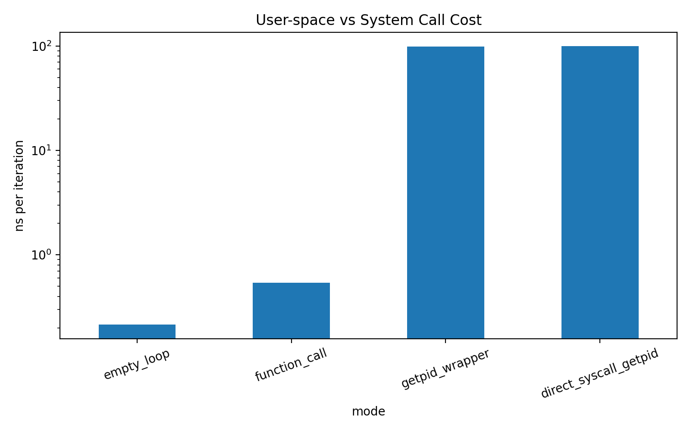

00-syscall-cost¶
Modern software frequently interacts with the operating system through system calls (syscalls).
Although syscalls provide essential services such as file I/O, process management, and networking, they require crossing the user–kernel boundary, which introduces non-trivial overhead.
This experiment measures the cost of a minimal syscall and compares it with normal user-space execution.
Why Measure System Call Cost?¶
User-space code runs in unprivileged mode, while the operating system runs in kernel mode.
A system call must perform the following steps:
- Switch from user mode to kernel mode
- Execute kernel-side logic
- Return back to user mode
Even when the kernel performs very little work, the privilege transition itself has a measurable cost.
Understanding this cost is important for performance-sensitive systems because:
- Frequent syscalls can become a bottleneck
- Small I/O operations may suffer from syscall overhead
- High-performance systems often batch operations to reduce kernel interactions
Experiment Design¶
We compare four scenarios:
| Mode | Description |
|---|---|
| empty_loop | Baseline loop overhead |
| function_call | Simple user-space function call |
| getpid_wrapper | libc wrapper (getpid()) |
| direct_syscall_getpid | direct syscall (syscall(SYS_getpid)) |
This allows us to isolate the cost of crossing the user–kernel boundary.
Benchmark Configuration¶
iterations = 10,000,000 repeats = 5 CPU pinning = enabled clock source = CLOCK_MONOTONIC
The benchmark measures:
elapsed_ns ns_per_iter
Results are stored in:
artifacts/data/syscall_cost.csv
Results¶
Average values across 5 runs:
| Mode | Mean (ns per iteration) |
|---|---|
| empty_loop | ~0.23 ns |
| function_call | ~0.54 ns |
| getpid_wrapper | ~98 ns |
| direct_syscall_getpid | ~99 ns |
Visualization¶

The figure shows the average cost per iteration.
Two observations immediately stand out:
- User-space execution is extremely cheap
- Syscalls are roughly two orders of magnitude more expensive
Key Observations¶
1. User-space execution is extremely fast¶
A simple function call costs roughly:
~0.5 ns
This corresponds to only a few CPU cycles.
2. System calls are about 200× slower¶
A minimal syscall (getpid) costs approximately:
~100 ns
Relative cost:
syscall / function_call ≈ 100 ns / 0.54 ns ≈ 185×
Even the simplest syscall is roughly two orders of magnitude more expensive than a normal function call.
3. libc wrapper overhead is negligible¶
Comparing:
getpid() syscall(SYS_getpid)
shows almost identical results.
| Mode | Mean ns |
|---|---|
| getpid_wrapper | ~98 |
| direct syscall | ~99 |
This indicates that the majority of the cost comes from the kernel boundary crossing, not from the libc wrapper.
Estimated CPU Cycle Cost¶
Assuming a CPU frequency of 3–4 GHz:
1 cycle ≈ 0.25–0.33 ns
Therefore:
100 ns ≈ 300–400 cycles
This aligns well with commonly reported syscall entry/exit costs on modern x86 systems.
Why This Matters¶
Because syscalls are expensive relative to user-space operations, high-performance software often tries to:
- batch system calls
- buffer I/O operations
- avoid very small reads/writes
- minimize kernel transitions
This principle is widely used in systems such as:
- high-performance web servers
- database engines
- networking stacks
Limitations¶
This experiment measures a minimal syscall (getpid).
Real-world syscalls may involve additional overhead due to:
- disk I/O
- scheduler interactions
- memory allocation
- blocking operations
Additionally, measurements may vary depending on:
- CPU frequency scaling
- background processes
- kernel version
- hardware architecture
Conclusion¶
This experiment confirms a key systems performance insight:
empty loop ≈ 0.2 ns function call ≈ 0.5 ns minimal syscall ≈ 100 ns
Even the lightest system call is roughly two orders of magnitude more expensive than a typical user-space function call.
The difference arises from the user–kernel privilege boundary, making syscall frequency a critical factor in performance-sensitive systems.